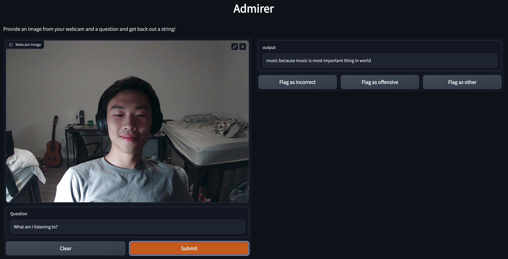
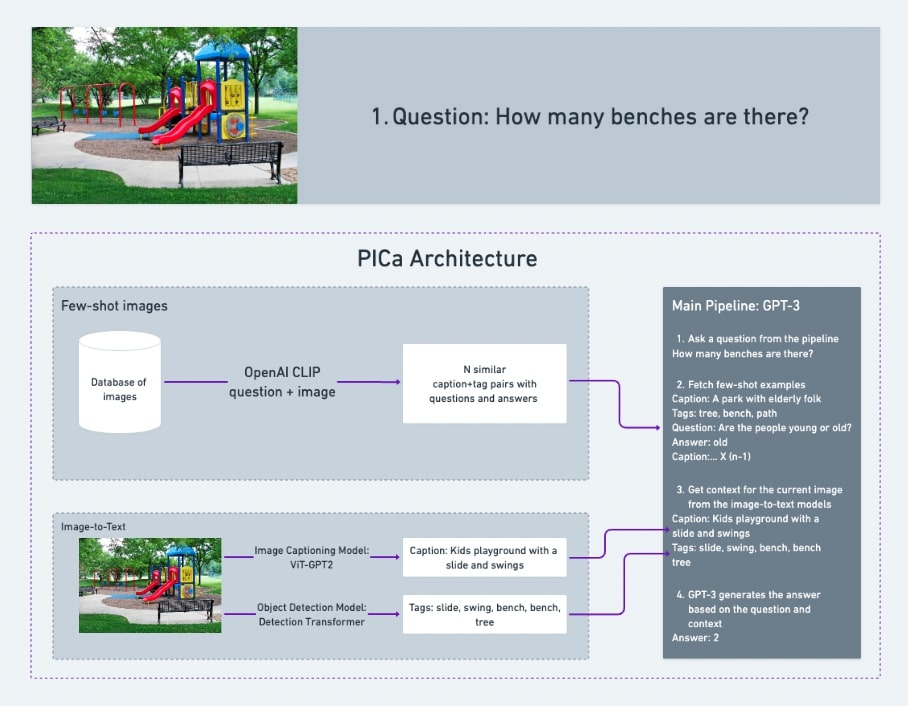
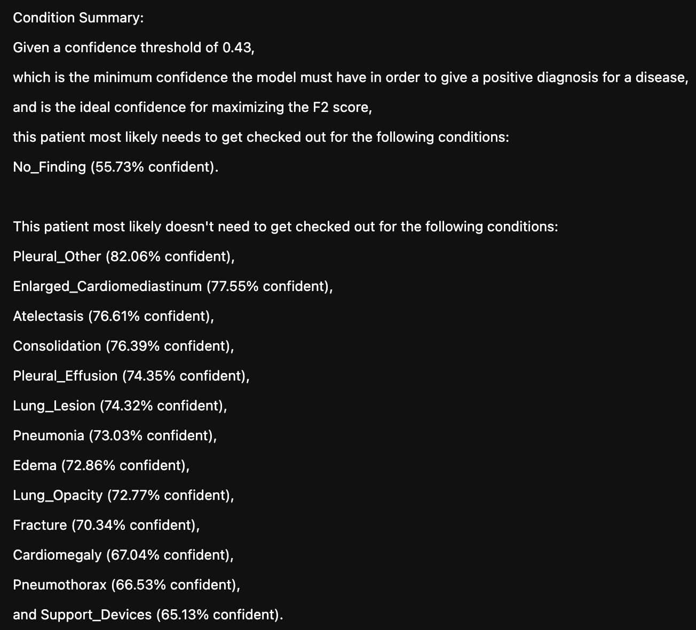

My Projects
Here are some of the projects I've worked on:
- CacheChat, a website to talk with GPT-3.5 about your data of any form at crazy-fast speeds using only Numpy and the OpenAI API.
- I built it in two days in preparation for an "Everything GPT" workshop I hosted for the Association of Computing Machinery (ACM).
- Captafied, a website that helps users understand their spreadsheet data without the learning curve of data processing and visualization tools such as Excel or Python.
- I built the MVP in one week and created a production-grade website with two ACM members within five weeks, which led to an internship offer from Procurement Sciences.
- Admirer, a website that uses webcam feeds to answer open-ended questions requiring outside knowledge.
- I built the MVP as a final project for the Full Stack Deep Learning (FSDL) 2022 course, where it was featured on the project showcase.
- I then created a production-grade website with Aleks Hiidenhovi, an FSDL alum, as an entry for the ZenML Month of MLOps competition, where we won the "Most Promising Entry" prize. We were invited by the ZenML team to document our work and progression as a blog post. Comments from Hamza Tahir, co-creator of ZenML, about our project can be found here.
- CheXRay, a website that uses chest x-rays to generate detailed diagnoses for patients with lung diseases.
- I used around eight percent of the training set from the MIMIC-CXR dataset to train two models: a report generation model that achieves a Bleu4 score of 0.0704 and a diagnosis model with a precision of .545 and a recall of .824. As a comparison, this contemporary SOTA model which I train as the report generation model uses the entire training set to achieve a Bleu4 score of 0.103. The authors use this NLP labeler to achieve a precision of 0.333 and a recall of 0.273.
-
Here's an example of a generated radiologist report (which can also be found on the GitHub page):
-
None. The lungs are clear without focal consolidation. No pleural effusion or pneumothorax is seen. The
cardiac and mediastinal silhouettes are unremarkable. No acute cardiopulmonary process. Chest
radiograph.
No evidence of pneumonia. Chest radiograph. Chest radiograph. Chest radiograph. No acute cardiopulmonary
process. Chest radiograph. No evidence of pneumonia. Chest radiograph. Chest radiograph. .
- Clearly, there's a way to go, but I'm proud of this performance given the limited resources I had at the time.



